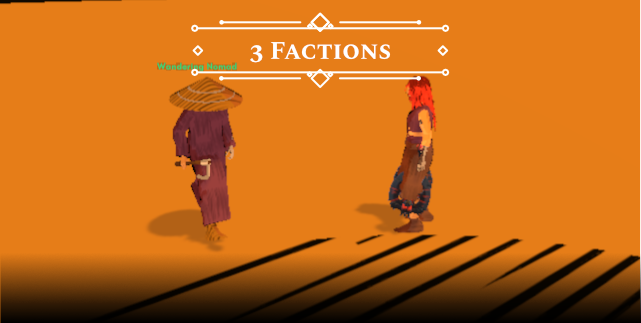
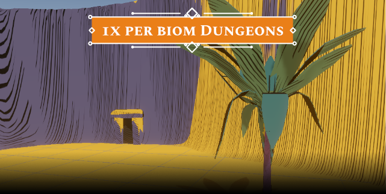
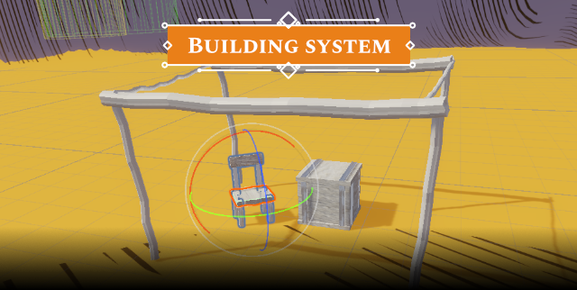
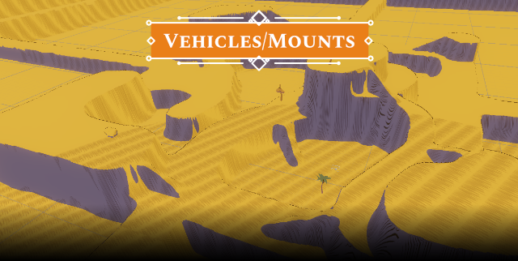
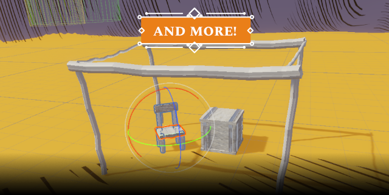

ARCANEPUNK LOST
Arcanepunk lost is an arcanepunk (obviously) inspired, indie, solo-developed rpg which takes time in alternative, distopic future. why is it "so" alternative? This world ended rougly in 1900's. This post-victorian age was well known for its technological progression, weird fasion, colonialism and much more. But in our game the twist arrives. Unknown forces destroyed the world. And those who survived form nations, religions, clans or just wander solo in what's left out of the world. Now imagine what would happen 200 years later? would the world be any different? be sure it would! Especially if suspicious forces that are unexplainable by science begin to manifest. Who's is to blame for the end of the world? And who will you side with? Technology? Magic? Or perhaps... Both?

Desert, greenlands, swamp and definitely more in the future. each biome will feature unique encounters, weather, art style and more. The world is semi-openworld. you are free to explore its boundaries, and explore vertical terrains.
Per biome factions that will include unique NPCs, faction specific quests and perhaps even faction choise system. (This last part might come later in q2 of 2023)

Each biome should breathe with life. Some of it will be even harvestable. Currently i have several interactible objects, like trees, ores and more on its way. Some have unique physics system implemented and most importantly the time will be not merciful.

Same as interactibles will monsters and animals fill the world of Arcanepunk Lost. For starters i will try to include 3 monsters per biome and maybe add up some friendly animals. The models are custom and monsters are unique. I will try to create a bestiary for them in the future.
Dungeons will play a major role in obtaining of the most important materials for unique armors and weapons. Some dungeons will be more magicaly influenced and some just purely steampunk. however the similarities can be found in various puzzles and mischieves.

Questing will eventually become the core of the replayble loop. The plans are to create per faction quest system, which will allow player to pick only the quests which goes with the way of certain faction. In the future i would like to include even world changing quests. Which could eraise whole factions.


The soundtrack is not the thing to be rushed. The whole sound system and music in particular is a huge responsibility and totally not in my perk repertoire. Neverless i am actively trying to connect with some perspective sound artists and we are currently working on our first tracks.
The building system has always had a great impact on all kinds of rpgs. I can imagine players to be able to choose the best looking locations and building up the their dream factories, player homes, or even some witch dens. All of those things are in the distant future and in q3 of 2023 we will hopefully get our hands on playable building demo. (to be decided)
the world is semi-open and consists of 400x400m cells Even though it might not seem too large for a single cell, the maps are designed to be vertical. In some cases players will need to travel across several floors to reach certain Npcs, quests, harvestables or puzzles. Mounts or primitive steampunk vehicles might come handy.
There is obviously a ton of work to be done... neverless i will work on the project solo since this is my dream game. Things might get delayed, some mechanics might even get cancecelled but the development will go on. The primary things on the to do list will be: Optimalization, Localization
Q&A
1) What will make the game unique?
"The game is my personal project. I am heavily inspired by my favourite rpgs. Like Kenshi, outward, Arcanum of Steamworks and Magick Obscura and more. I want to create a world filled with lore and great community. Perhaps a huge modding community in the future. It doesnt have to be unique. It has to be fun."
2) What will make the game re-playable?
"Faction system, Random items stats, perhaps even random enemies (in the future - not in early development). I am even thinking about perma death options, or some other more interesting approaches. One of the dreams is also to implement random generated dungeons."
3) Will the game be free?
"It is to be decided. However i do think about smaller one-time purchase via Steam after the final release."
4) What engine do you use to develop the game?
"I am using Unity 21 LTS version. Also huge part of my development is based on assets like RPG Builder from Blink studio. I am graphic and UI designer and my coding experience is not so big. I hope that you are not judgemental about using assets. All the art like Shaders, 3D models etc is my work, and i will also implement my own mechanics."
5) Can we play the game now?
"No. There will be scheduled time-period when the releases will be tested for free. For more information join the Discord. The Final release will be announced in the future and the Steam page or Itch page will be created."
6) Can we help you?
"I am not actively looking for a crew right now, nor the publisher. However if you are interested write me an email via contacts on this website. Like i mentioned my programming is not so good, and also sound work is a problem."
7) Where can we learn news about the game?
"There are blog posts with a tag "arcanepunk" on the website. You can also follow my Discord for more personal approach."